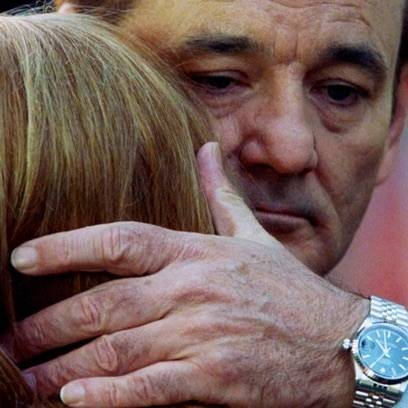

1 regret, 1 moment of pride, 1 goal, 1 dream and 1 fantasy (any way you define that)
-
Regret: I'm not big on regret but that's a lousy response to the question so I'll say this: That it took me so long to figure out there's nothing wrong with me and I can do and be and love anything I want.
Sometimes I think the reason I like coming of age stories so much is that I spent so much of my life doing it.
-
Pride: That I did ok with my kids.
I think every parent thinks this and every kid knows how much their parents screwed them up, but I tried to listen and I tried to teach, I tried to protect them, I tried to expose them, I tried to guide them and I tried to set them free. I tried to model the right things and I definitely learned every day. And I always always always loved them. I like to think I did ok.
-

Dream: To some day say what I really mean convincingly. About things that are important to me. In a lasting way. Authentically.
It's hard you know. Snippets maybe but how do you say it all and not get it wrong?
-
Fantasy: To sit down to lunch with Terry Zwigoff and ask him if Enid in Ghost World stole those sunglasses from the Sidewinder.
This is just something I need to know.